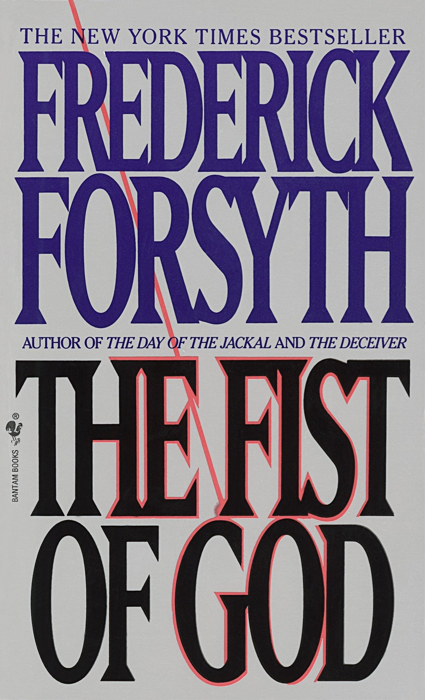

This long novel (624 pages) is effectively a retelling of the Gulf War, starting a little before Saddam Husseins invasion of Kuwait on 2 August 1990, following the creation of the anti-Saddam coalition at the United Nations and then the deployment of the vast numbers of mainly American military men and materiel at the frontier between occupied Kuwait and neighbouring Saudi Arabia (Operation Desert Shield). It then moves seamlessly into the month-long air war against Iraq (17 January 23 February) before the pulverising Operation Desert Storm which killed large numbers of Iraqi troops, destroyed their hardware and drove them out of Kuwait (24 to 28 February). Forsyth is enamoured of the men, machines, the hardware, planes and tanks, the radar and missile launchers, the regiments and divisions, the pilots, planners, generals and strategists involved in this colossal effort. Reading this book is much more like reading a factual book called Weapons of the Gulf War than a novel. 336th Squadron out of Al Kharz [had been assigned] a big SAM missile site north-west of Baghdad. The SAMs were controlled by two large radar dishes… With twenty-four Strike Eagles in the squadron, 20 January was going to be a multi-mission day. The squadron commander, Lt.-Col Steve Turner, had allocated a twelve-plane detail for the missile base. A swarm of Eagles that large was known as a gorilla. The gorilla was led by one of the two senior flight commanders. Four of the twelve planes were packing HARMS, the radar-busting missiles that home in on infra-red signals from a radar dish. The other eight carried two long, gleaming, stainless-steel-cased laser-guided bombs known as GBU-10-I. When the radars were dead and the missiles blind, they would follow the HARMS and blow away the rocket batteries. Hundreds of pages are like this. Reading The Fist involves immersing yourself in exhaustive explanations of military hardware and military planning, in scenes describing the geopolitics and strategies of the various nations involved, in a highly detailed account of the war seen from a solidly pro-Coalition, military-minded perspective.

Among the factual briefings and threaded into the historical timelines, there are a number of fictional storylines (though not as many as you might expect for such a very long book). Mike Martin The main one is the story of Mike Martin, a dark-skinned SAS man, fluent in Arabic, who is dropped into Iraqi-occupied Kuwait to pose as a Bedou, radio back reports to his masters and wage a small campaign of destruction. This he does, meeting some of the Kuwaiti underground, training and organising them, providing explosive and intel. After a tense few weeks he is pulled out and redeployed into Baghdad itself, where he is given the ultra-dangerous mission of renewing contact with a senior spy in Saddams entourage, code-named Jericho. Terry Martin It so happens that Mikes brother, Terry Martin, a professor of Arabic at the London School of Oriental and African Studies. It was he, in an early meeting with a member of the Intelligence Services, who recommended his Arabic-speaking brother for the mission. Terry ends up serving informally with the Medusa committee, set up to interpret reports coming out of Iraq during the crisis, and so provides a handy in to the discussions and debates among the SIS officers as the novel unfurls. Baghdad boyhood Both the Martins were raised as boys in Baghdad of the 1950s when their engineer father lived there a factor in Mikes selection for the mission, and which allows Forsyth, through Martins eyes, to give us detailed descriptions of the geography and feel of Baghdad, as it was then, and as it is now, 40 years later. Gerald Bull and the Babylon Gun Right at the start of the novel we meet the true-life figure of Dr Gerald Bull, and get a thorough review of his career as an engineer and developer of supersize artillery, before his true-life assassination on 22 March 1990. After his death the Press was full of reports about the Supergun he had been designing for the Iraqis, but Forsyth cannily goes beyond the known facts to fictionalise the idea that the Iraqis did manage to erect one of Dr Bulls 150-metre long supersize guns. In this fictional version, the Iraqis built it to lie along the incline of a hill in an isolated and mountainous part of Iraq, where an entire military support base supporting it is completely camouflaged. In a whopping great coincidence it turns out that the engineer who master-minded the erection of the gun and the complete concealment of the military base, attended the same Baghdad prep school as Mike and Terry, Osman Badri, who we see supervising its construction and who then plays a crucial role in its destruction, 500 pages later. But for the central part of the novel, this whole supergun plotline is forgotten while we follow Mike Martins adventures, a staggeringly detailed account of Operation Desert Shield, and then the start of the air campaign against Iraq (January 17 1991). For most of the book, if there is one central concern it is the issue of the top Iraqi spy code-named Jericho.